Saint Helier - Saint Hélyi - Saint Hélier

St. Helier's feast day is July 16, and there is an annual procession from the Parish Church of St. Helier, in the centre of the town of St. Helier, down to the beach, along the causeway and out to the chapel which was built over the site where St. Helier lived, and which is known as the Hermitage.
Pictures of the 1997 Pilgrimage
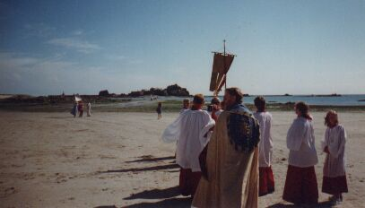
The causeway linking the shore to the Islet on which the Hermitage is situated is uncovered at low tide.
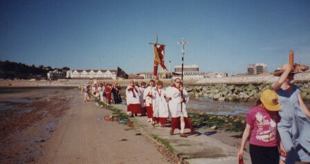
The procession is one of the most colourful municipal occasions....
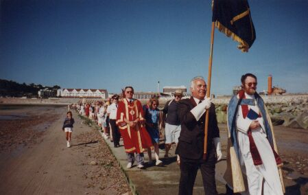
....and anyone is welcome to join in as the procession wends its way towards the Hermitage
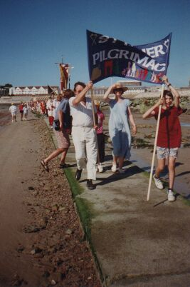
Beachwear and official robes make an unusual mix
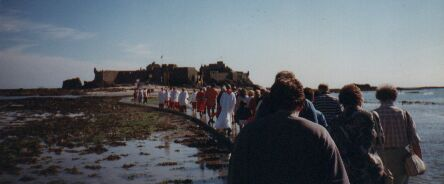
The walk along the causeway can be a bit damp....
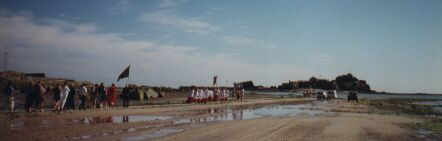
........... but St. Helier himself used to mortify the flesh by standing in pools of cold water
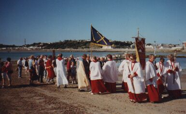
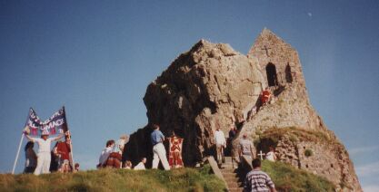
The Connétable and the Dean and other church leaders are the first to enter the Hermitage
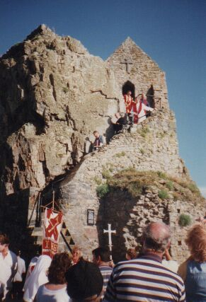
The Connétable lays a wreath on behalf of the municipality
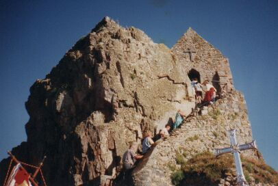
Climbing up the uneven steps to the Hermitage can be a bit tricky in windy weather
There is a small originally natural hollow in the rock inside the Hermitage known as St. Helier's Bed.
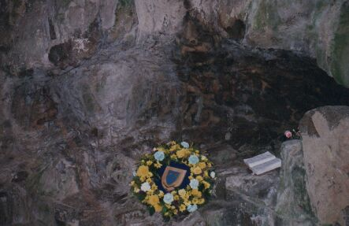
A picture of the 1976 pilgrimage
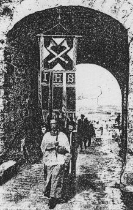
R'tou à la page d'siez-mé | Back to home page
E-mail: geraint@societe-jersiaise.org